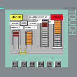
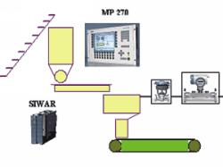

Здесь вы можете ознакомиться с проектами, которые были выполнены нами.

ТОО «ВК Рем Групп» с 2018 года является Авторизованным представителем компании FESTO на территории республики Казахстан.

Волма – федеральная производственная компания. Основная специлизация: добыча природного гипсового камня и производство строительно-отделочных материалов.

Евразия – одна из крупнейших независимых буровых компаний, занимающаяся бурением, строительством, ремонтом нефтеных и газовых скважен.
Это единственное предприятие в России, производящее утолщенный и одинарный облицовочный керамический кирпич по методу жесткой экструзии.
Волгоградский гипсовый завод «Гипсотон» был основан в 1943 году для восстановления разрушенного войной города. С 1999 года завод получил второе рождение.
– Автоматизация контроля, сбора, обработки, хранения и представления информации о состоянии
объектов ГТП.
– Поставка оборудования.
– Монтаж, наладка и запуск системы.
– Контроль и автоматическое ПИД-регулирование концентрации серной кислоты в ТУЗах.
– Контроль расхода и давления серной кислоты и выщелачивающего раствора по каждому смесителю узлов закисления.
– Контроль расхода выщелачивающего и продуктивного растворов по каждой скважине.
– Контроль состояния откачного погружного насоса.
– Оперативный учет материальных потоков и ресурсов добывающего комплекса
– Контроль за состоянием откачных насосов со скважин.
– Возможность ручного управления клапанами подачи серной кислоты.
– Первичная обработка информации, обеспечивающая возможность ведения технологического процесса добычного комплекса по заданному графику добычи продуктивного раствора.
– Сохранение всех измеренных значений от датчиков и возникших сообщений в памяти компьютеров центральной диспетчерской.
– Гибкая система вывода сохраненных (заархивированных) или текущих значений от датчиков на графики, с возможностью комбинирования нескольких различных графиков в одном окне.
– Графический вывод состояния работы ПИД-регуляторов, с возможностью просмотра как текущих значений, так и из архива.
– Табличный вывод почасовых расходов кислоты с ТУЗ.
– регулирование расхода раствора ПР в 21-ну колонну СНК-3М;
– управление запорно-регулирующей арматурой (далее – ЗРА) загрузки денитрированного сорбента и возвратного раствора в загрузочные бункера;
– регулирование ЗРА расходов десорбирующего раствора в СДК-1500;
– управление ЗРА выгрузки сорбента из СДК-1500;
– управление ЗРА выгрузки насыщенного сорбента из СНК-3М;
– управление ЗРА подачи воздуха в СДК-1500;
– управление ЗРА вывода маточников десорбции;
– управление ЗРА загрузки сорбента из напорных бункеров колонн СДК-1500;
– регулирование ЗРА подачи денитрирующего раствора, согласно заданному алгоритму процесса;
– работа процессов сорбции и десорбции в автоматическом режиме по времени.
Транспорт цеха по производству пазогребневых плит предназначен для транспорти ровки вагонеток. Пустые вагонетки доставляются к 4-м формовочным машинам, далее вагонетки с плитами доставляются в сушила (распределение вагонеток по сушилам происходит либо в автоматическом режиме по мере опустошения сушил, либо вручную оператором). Из сушил вагонетки доставляются на упаковочные машины, далее пустые вагонетки отправляются на возвратные пути, откуда, в свою очередь, снова на формовочные машины и цикл повторяется.

Система автоматизации должна обеспечивать замену вагонеток нажатием на одну кнопку.
Система автоматизации выполнена на базе двух контроллеров S7-315-2DP, объединенных в сеть MPI. Каждый контроллер является мастером в собственной сети ProfiBus, предназначенной для обмена данными с модулями удаленной периферии ET200M. Управление осуществляется с 4-х операторских панелей TP 277. Система визуализации выполнена на WinCC Flexible 2007.
– 672 входа, 288 выходов ( включая аналоговые);
– два контроллера Siemens SIMATIC S7 315-2DP, объединенных сетью MPI;
– удаленная периферия ET200M - 6 штук;
– 4 панели оператора TP277;
– ProfiBus DP 670 м (установлено 3 репитера).
Система удаленного мониторинга буровой установки предназначена для постоянного контроля за состоянием оборудования автоматики и камер видеонаблюдения бурового комплекса. Данная система позволяет решать ряд задач, связанных с проведением ремонтных и пуско-наладочных работ оборудования автоматики без непосредственного присутствия специалиста на буровой установке.

Система удаленного мониторинга должна обеспечивать постоянный контроль за состоянием оборудования буровой установки. Иметь постоянное подключение к контроллеру (CPU).
– Точки беспроводного доступа WIFI – 2 шт.
– Направленная антенна WIFI – 2 шт.
Газовая печь для обжига керамических блоков требует периодической подачи не обожжённых блоков одновременно с выгрузкой готовой продукции. Система транспортировки материала представляет собой две тележки, состоящие из двух подвижных частей. Каждая из частей тележки обеспечивает перемещение в перпендикулярных направлениях, для перестановки материала с транспортных путей производственных линий на пути печи. Сушильные камеры, так же как и печь, требуют перемещения материала в двух направлениях – от линий производства к камерам и обратно на линию разгрузки.
Система автоматизации предполагает полное исключение человека из процесса загрузки-выгрузки. Соединение сильно удаляющихся друг от друга частей тележек решено было выполнить с помощью беспроводного соединения контроллеров, установленных на разных частях тележек. Сенсорная панель для управления процессом загрузки-выгрузки сушил обеспечивает удаление оператора от передвигающихся на большой скорости тележек. На ней предусмотрена индикация текущего уровня заполнения камер с возможностью оперативного редактирования. Интеграция в существующую АСУ ТП на базе Siemens WinCC по протоколу ProfiNet для обеспечения контроля процессов.
– Контроллеры Siemens SIMATIC S7-1200 – 6 шт.
– Беспроводные модули связи WI-FI Phoenix Contact FL WLAN-5100 для связи подвижных частей тележек.
– Сенсорная панель управления Siemens KTP-400.
– Интеграция в существующую АСУ ТП по протоколу ProfiNet.
Применение современного оборудования фирмы Siemens позволило упростить техническое обслуживание системы автоматизации, повысить ее надежность. Полная автоматизация процесса загрузки-выгрузки сократила человеческое участие в процессе, что обеспечило соблюдение технологического регламента, повысив качество продукции.
Обеспечить соблюдение пропорции вода-гипс с учетом технологического рецепта, скорости конвейера и толщины листа, исключить ручной труд.
Линия по изготовлению гипсокартонных листов включает в себя: систему дозирования, смешивания, шесть ленточных конвейеров, опрокидыватель, ножницы, подъёмный мост, шестиярусную сушильную камеру, укладчик листов.
Компоненты системы дозирования:
– Ленточный весовой дозатор. Для ленточного весового дозатора система автоматики выполнена с применением частотного преобразователя Micromaster 440, датчиков взвешивания Siwarex и электронного модуля Siwarex М.
– Питатель сыпучих материалов с преобразователем Micromaster 420.
– Дозатор жидкости, который состоит из клапана с электрическим приводом и ультразвукового расходомера Sitran.
– Устройство перемешивания.
– Ленточный конвейер с электрическим приводом от Micromaster 440.
– Скребковый транспортёр с электрическим приводом.
– Ножницы с электрическим приводом Micromaster 440.
– Контроллер SIMATIC S7 314С обеспечивает управления всеми узлами, поддерживает заданную производительность линии и обеспечивает заданные пропорции, а также передаёт всю информацию на MP 270.
Внедренная система автоматизации позволила увеличить скорость движения конвейера с 8м/мин до 20м/мин, улучшить качество смеси, снизить расход гипса и добавок.
 RUS
RUS ENG
ENG